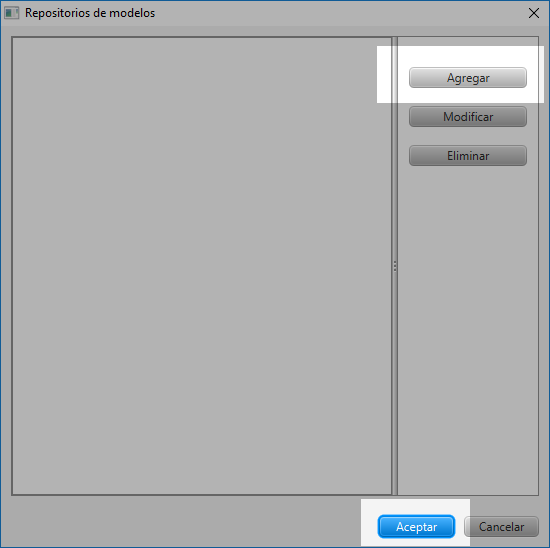
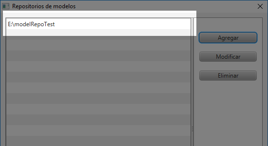

3. Interfaz de usuario¶
3.1. Interfaz principal¶
En la interfaz principal de la aplicación se pueden apreciar las secciones:
- Barra de menú
- Menú de funcionalidades principales
- Región de descripciones
- Botones de navegación

A continuación se explica con más detalle algunas de estas secciones.
{kind=link}
3.1.3. Región de descripciones¶
En esta región aparece una corta descripción de la funcionalidad seleccionada del menú de la sección anterior.
3.2. Cuadro de diálogo repositorio de modelos¶
Este cuadro de diálogo permite gestionar los repositorios de modelos.

3.2.1. Agregar un repositorio¶
Para agregar un repositorio hacer clic en el botón agregar.
{kind=link}
En la caja de texto del cuadro de dialogó que aparece, digitar la ruta local o agregar la url del repositorio y hacer clic sobre el botón Aceptar.
Nota
Para agregar una ruta local fácilmente, hacer clic sobre el botón examinar y seleccionar la ubicación del repositorio.
{kind=link}
El repositorio agregado debe aparecer en la lista de repositorios.
{kind=link}
3.2.2. Modificar un repositorio¶
Método 1
Hacer clic sobre el repositorio que se quiere modificar para seleccionarlo y luego hacer clic sobre el botón modificar.

Luego se puede hacer clic nuevamente para modificarlo directamente sobre la lista.

Modificar la ruta del repositorio sobre la caja de texto del cuadro de dialogó que aparece y hacer clic en el botón Aceptar.
Método 2
Hacer clic sobre el repositorio que se quiere modificar para seleccionarlo y de nuevo hacer clic sobre éste para ponerlo en modo edición. Modificar la ruta del repositorio y presionar la tecla Enter.

3.2.3. Eliminar un repositorio¶
Hacer clic sobre el repositorio que se quiere eliminar para seleccionarlo y luego hacer clic sobre el botón eliminar.

Aparecerá un dialogó solicitando que se confirme la acción. Hacer clic en el botón Aceptar. El repositorio desaparecerá de la lista.